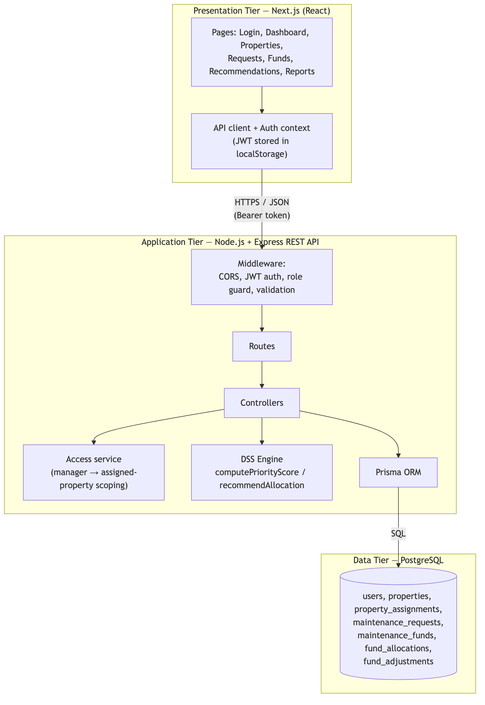
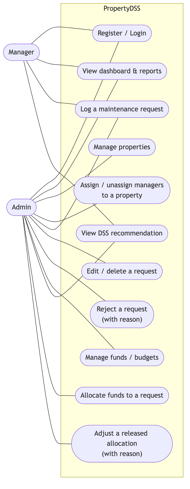
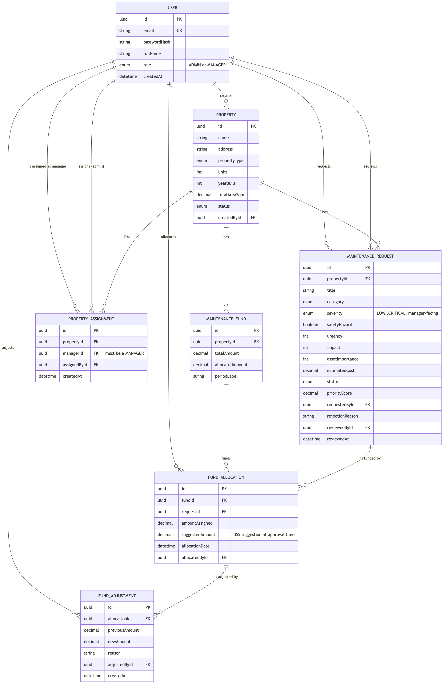
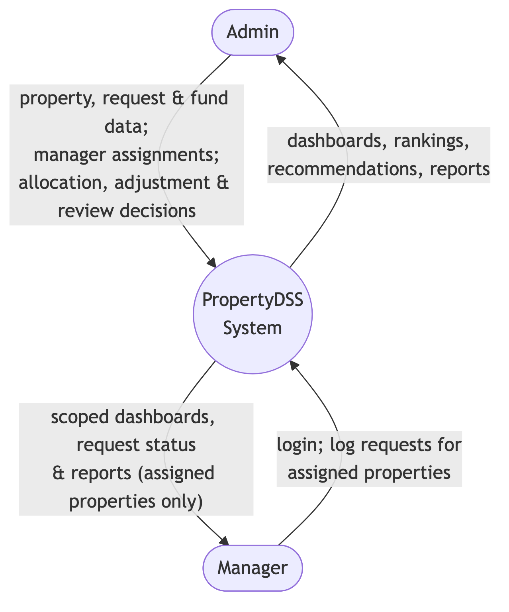
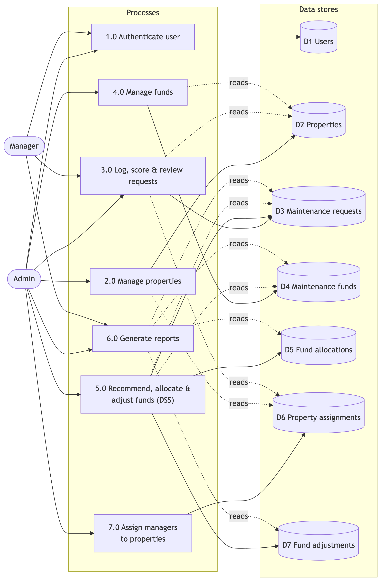
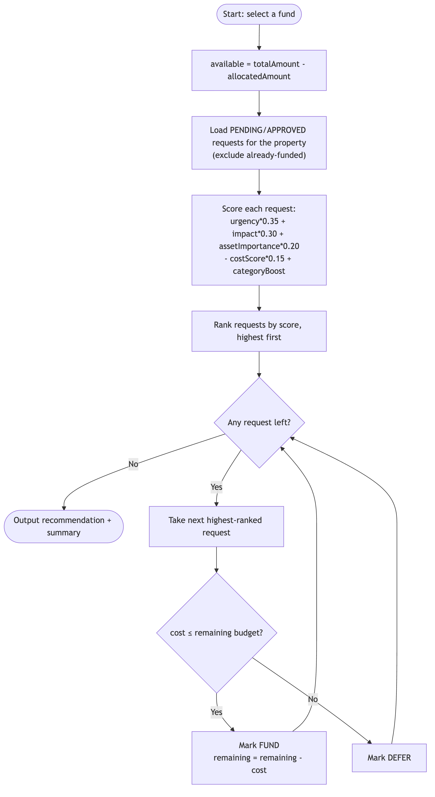
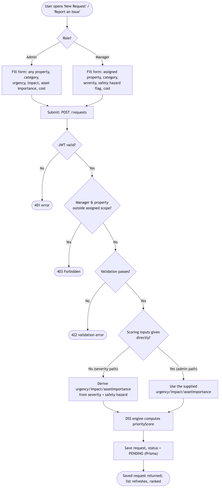
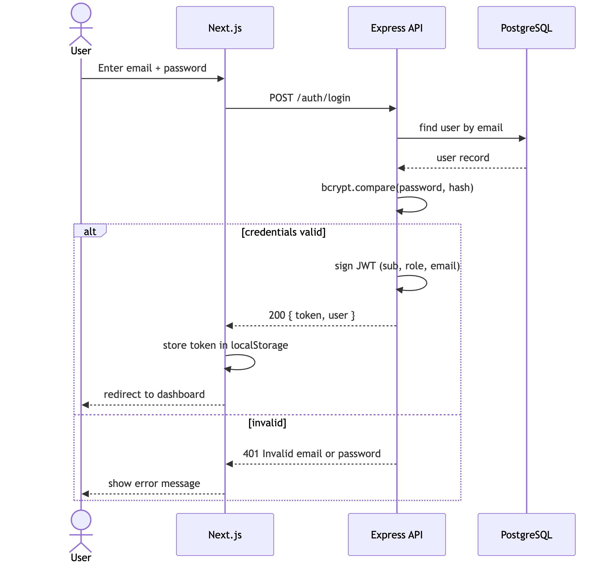
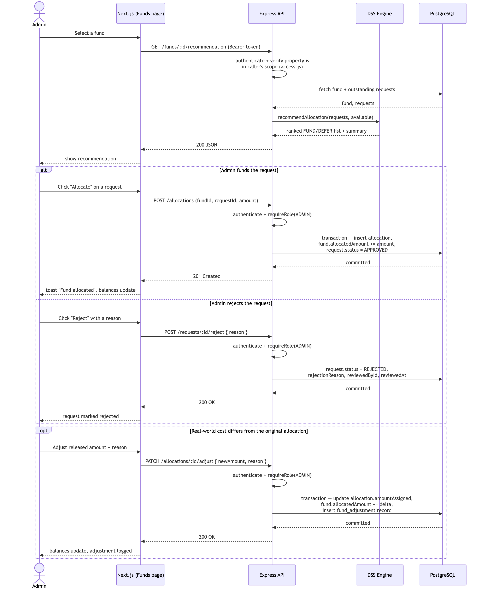
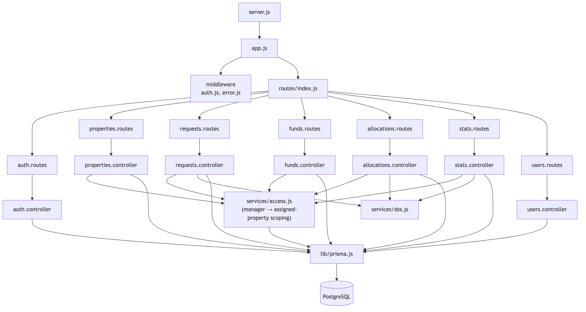

1. System architecture (three-tier)

2. Use case diagram

3. Entity-Relationship diagram (database)

4. Data flow diagram — context (level 0)

5. Data flow diagram — level 1

6. DSS algorithm flowchart (priority scoring + budget allocation)

7. Activity — logging a maintenance request (server-side scoring)

8. Sequence — authentication (JWT)

9. Sequence — DSS recommendation, fund allocation, rejection & adjustment

10. Backend module structure
